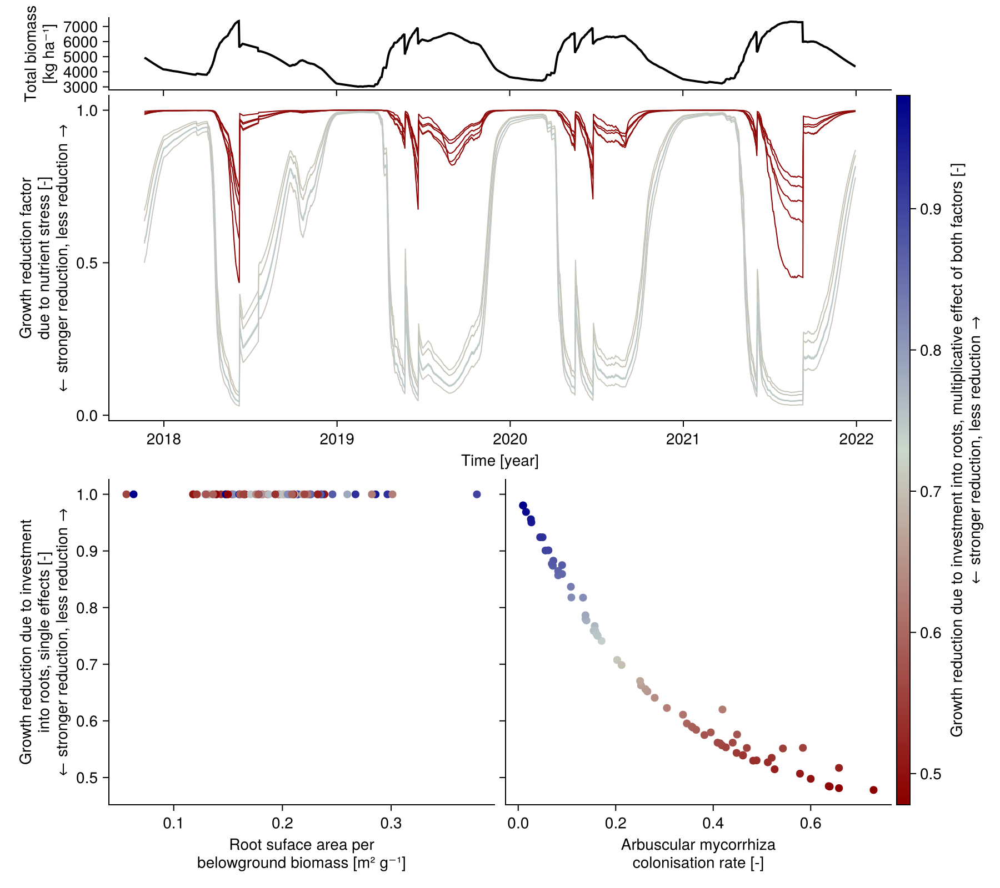
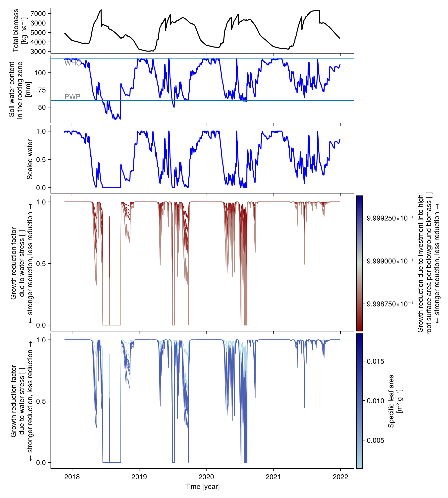

Influence of intermediate variables
Trade-off between investing in roots and experiencing nutrient stress
- plants with a high investment into roots have a high arbuscular mycorrhizal colonisation rate and a high root surface area per belowground biomass
- low growth reduction due to nutrient stress
- investment costs energy, this is implemented by a growth reducer that is independent of the nutrient level
- nutrient stress is stronger if the total biomass is high, because of the strong competition for nutrients, see
below_ground_competition!
show code
using CairoMakie
using Unitful
import GrasslandTraitSim as sim
let
lastn_points = 1500
trait_input = sim.input_traits();
input_obj = sim.validation_input(; plotID = "HEG01", nspecies = 43, time_step_days = 1);
p = sim.SimulationParameter()
sol = sim.solve_prob(; input_obj, p, trait_input);
t = sol.simp.mean_input_date_num[end-lastn_points:end]
t_out = sol.simp.output_date_num[end-lastn_points:end]
total_biomass = ustrip.(vec(sum(sol.output.biomass[end-lastn_points:end, 1, 1, :];
dims = :species)))
fig = Figure(size = (900, 1000))
Axis(fig[1, 1:2];
xticklabelsvisible = false, xticksvisible = true,
xticks = 2018:1:2022, ylabel = "Total biomass\n[kg ha⁻¹]")
lines!(t_out, total_biomass;
linewidth = 2, color = :black)
c = vec(sol.calc.root_invest_amc .* sol.calc.root_invest_rsa)
colorrange = (minimum(c), maximum(c))
species_order = sortperm(c)
colormap = :redsblues
Axis(fig[2, 1:2];
xticks = 2018:1:2022,
ylabel = "Growth reduction factor\ndue to nutrient stress [-]\n← stronger reduction, less reduction →",
xlabel = "Time [year]")
for s in sortperm(c)[[1, 2, 3, 4, 5, 39, 40, 41, 42, 43]]
lines!(t, vec(sol.output.nutrient_growth[end-lastn_points:end, 1, 1, s]);
colorrange, colormap, color = c[s], linewidth = 1)
end
ax1 = Axis(fig[3, 1];
xlabel = "Root suface area per\nbelowground biomass [m² g⁻¹]",
ylabel = "Growth reduction due to investment\ninto roots, single effects [-]\n← stronger reduction, less reduction →")
scatter!(ustrip.(sol.traits.rsa), sol.calc.root_invest_rsa;
color = c, colormap,
markersize = 10)
ax2 = Axis(fig[3, 2];
xlabel = "Arbuscular mycorrhiza\ncolonisation rate [-]",
yticklabelsvisible = false)
scatter!(sol.traits.amc, sol.calc.root_invest_amc;
color = c, colormap,
markersize = 10)
linkyaxes!(ax1, ax2)
Colorbar(fig[2:3, 3]; colorrange, colormap,
label = "Growth reduction due to investment into roots, multiplicative effect of both factors [-]\n← stronger reduction, less reduction →")
rowsize!(fig.layout, 1, Relative(0.1))
rowsize!(fig.layout, 2, Relative(0.5))
rowgap!(fig.layout, 1, 5)
rowgap!(fig.layout, 2, 10)
colgap!(fig.layout, 1, 5)
fig
end
Trade-off between investing in roots and experiencing water stress
- a high root surface area per belowground biomass reduces water stress but the investment costs energy (see figure above)
- a low specific leaf area (leafs are thick) reduces water stress but plants with a high specific leaf area have a higher leaf area index and can intercept more light
show code
using CairoMakie
using Unitful
import GrasslandTraitSim as sim
let
lastn_points = 1500
trait_input = sim.input_traits();
input_obj = sim.validation_input(; plotID = "HEG01", nspecies = 43, time_step_days = 1,
included = (;
belowground_competition = true,
nutrient_growth_reduction = true,
water_growth_reduction = true,
root_invest = true));
p = sim.SimulationParameter()
sol = sim.solve_prob(; input_obj, p, trait_input);
t = sol.simp.mean_input_date_num[end-lastn_points:end]
t_out = sol.simp.output_date_num[end-lastn_points:end]
total_biomass = ustrip.(vec(sum(sol.output.biomass[end-lastn_points:end, 1, 1, :];
dims = :species)))
PWP = sol.patch_variables.PWP[1, 1]
WHC = sol.patch_variables.WHC[1, 1]
water_out = vec(sol.output.water[end-lastn_points:end, 1, 1])
function get_Wsc(x; WHC, PWP)
return x > WHC ? 1.0 : x > PWP ? (x - PWP) / (WHC - PWP) : 0.0
end
PET_shifted = max.(sol.input.PET[end-lastn_points:end] .- sol.p.α_PET, -90.0u"mm")
pet_factor = exp.(-sol.p.β_PET .* PET_shifted)
water_scaled = get_Wsc.(water_out; WHC, PWP) .* pet_factor
fig = Figure(size = (900, 1000))
Axis(fig[1, 1];
xticklabelsvisible = false,
xticks = 2018:1:2022, ylabel = "Total biomass\n[kg ha⁻¹]")
lines!(t_out, total_biomass;
linewidth = 2, color = :black)
Axis(fig[2, 1];
xticklabelsvisible = false,
xticks = 2018:1:2022, ylabel = "Soil water content\nin the rooting zone \n[mm]")
lines!(t_out, ustrip.(water_out);
linewidth = 2, color = :blue)
hlines!(ustrip.([PWP, WHC]))
text!([t_out[1], t_out[1]], ustrip.([PWP, WHC]);
text = ["PWP", "WHC"],
align = (:left, :top),
color = :grey)
Axis(fig[3, 1];
xticklabelsvisible = false,
xticks = 2018:1:2022, ylabel = "Scaled water\nwith adjustment\nby PET [-]",
limits = (nothing, nothing, -0.1, 1.8))
lines!(t_out, water_scaled;
linewidth = 2, color = :blue)
c = vec(sol.calc.root_invest_rsa)
colorrange = (minimum(c), maximum(c))
species_order = sortperm(c)
colormap = :redsblues
Axis(fig[4, 1];
xticks = 2018:1:2022, xticklabelsvisible = false,
ylabel = "Growth reduction factor\ndue to water stress [-]\n← stronger reduction, less reduction →")
for s in sortperm(c)[[1, 2, 3, 4, 5, 39, 40, 41, 42, 43]]
lines!(t, vec(sol.output.water_growth[end-lastn_points:end, 1, 1, s]);
colorrange, colormap, color = c[s], linewidth = 1)
end
Colorbar(fig[4, 2]; colorrange, colormap,
label = "Growth reduction due to investment into high\nroot surface area per belowground biomass [-]\n← stronger reduction, less reduction →")
c = ustrip.(sol.traits.sla)
colorrange = (minimum(c), maximum(c))
species_order = sortperm(c)
colormap = :blues
Axis(fig[5, 1];
xticks = 2018:1:2022,
ylabel = "Growth reduction factor\ndue to water stress [-]\n← stronger reduction, less reduction →",
xlabel = "Time [year]")
for s in sortperm(c)[[1, 2, 3, 4, 5, 39, 40, 41, 42, 43]]
lines!(t, vec(sol.output.water_growth[end-lastn_points:end, 1, 1, s]);
colorrange, colormap, color = c[s], linewidth = 1)
end
Colorbar(fig[5, 2]; colorrange, colormap,
label = "Specific leaf area\n[m² g⁻¹]")
rowsize!(fig.layout, 1, Relative(0.1))
rowsize!(fig.layout, 2, Relative(0.15))
rowsize!(fig.layout, 3, Relative(0.15))
fig
end